いわき仏の里/福島県いわき市
私がいまこうして大観音の前でボーゼンと惚けているきっかけは一冊の写真集だった。
それは小林伸一郎氏の「DEATHTOPIA」（メディアファクトリー、1998）という廃虚ものの写真集なのだが、この中に奇妙な、というか大観音マニアの私にとっては見逃せない写真があったのだ。
それは荒れ果てた草むらのなかに金色の大観音像がポツンとたっているステキな写真だった。
しかも観音像の手前には珍寺の必須アイテム十二支守り本尊霊場巡り云々の看板が写っているぞ！
興奮気味にキャプションを見ると「いわき仏の里」とある。
以下その説明文の要約（丸写ししたいんだけどホラ、著作権とかあるから）
────福島県いわき市の湯の岳中腹に宗教テーマパークとして開園したいわき仏の里は未完成展望レストラン、巨大母子観音像、十二支めぐり、人形供養、弘法大師銅像、水子地蔵、七福神、金比羅、稲荷、天狗、閻魔大王、赤鬼、青鬼、鶴、亀、龍などの奇妙なオブジェや御神体を一同に展示。1971年に閉鎖。────
これを読む内に「行かねば・・・」と固く決意した私であった。
それから数カ月後、私は小林氏が2年前にこの写真を撮ったであろう場所に立っていた。
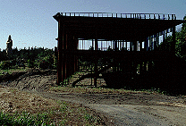 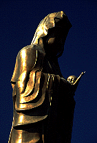 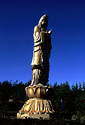
確かに10メートル程の大観音はいた。
横の看板には藤原慈母観音とある。
しかしそれを除いて辺りの状況は一変していた。
観音像はやけにさっぱりとした空き地の真ん中にあった。十二支守り本尊の看板も跡形も無くなくなっている。
私としては30年近く前に閉園された宗教テーマパークということでアンコールワットもびっくりの森に埋もれた手付かずの廃虚のようなモノを勝手に妄想していたのだが、敷地内には樹などなく雑草も1997年撮影とされる小林氏の写真よりも短い。つまり氏の撮影後、整地されちゃったという感じだ。
上記の魅力的なアイテムもほとんど姿を消しており、確認できたのは骨組みだけのレストランと弘法大師の銅像、水子地蔵群、しよぼい稲荷、そしてこの大観音像のみであった。その他はコンクリートの基礎が所々残っているだけである。
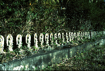 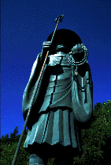 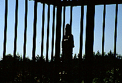 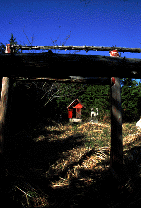
天狗とか鬼とか閻魔さまとか龍とか見たかったのに〜。
残酷である。役目を終えた神様仏様達（あと鬼とか閻魔様とか）がひっそり余生を森のなかで過ごすことすらできないのである。
現在ここは人手に渡り、残土の投棄場所となっている。従って、観音像のすぐ手前まで残土が積まれていて、私が訪れた短い時間の間だけでも数台のダンプがきてバンバン残土を捨てていった。
そんな味気ないその辺の埋め立て地みたいなところにぽつんと立つ大観音像。ガタイがでかいからぶっ壊すのが面倒だったのか、それともモノがモノだけに解体を躊躇したのか、いずれにせよそこには信仰の姿も廃虚が持つ独特の濃密な空間も無かった。近い将来、観音像はこのまま残土に埋まってしまうのであろうか。
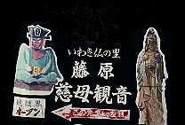 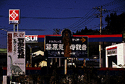
帰り道、高速道路の入り口付近でみかけた仏の里の看板はやけにきれいで、まるでまだ営業しているかのようであった。看板には地獄界オープンなどと30年程遅れてやって来た私を悔しがらせる文句が。
この看板見て来ちゃった人、結構多いと思うぞ。とっととはずせ〜、でもって俺にくれ〜。
最後に観音像の隣に立つ看板から物悲しいキャプションをひとつ。
「大地に緑 人に愛 緑が枯れないように永遠に輝くわが藤原慈母観音」
おまけ
仏の里を探すためいわき市の詳細地図を見ていると、「藤原慈母観音」のすぐ近くに湯ノ岳大仏という表記があった。はじめは仏の里の付属施設かと思いうきうきしていたのだが現地に行ってみると明らかに敷地外で、隣の円山公園の一画にあった。ま、大仏といってもオレよりちょっと大きいかな、という程度の露天の石仏だったんだけど、その隣に建っていた戦死者慰霊碑がやけにでかく、香炉がオレンジ色にペイントされていて、どす黒いオーラを感じた。
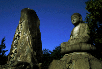 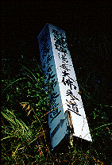 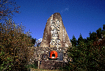
それにしても規模の差さえあれど隣同士に大仏と大観音。どうなってるんだここは、と思いつつさらに地図を見ていると仏の里からさらに山頂に登って行く途中に「弘法大師石庭霊場」なる表記が。しかしこれがいくら探しても見つからない。恐らく閉鎖＆撤去されちゃったんだろうけど、これも仏の里と関係してたのかなあ。
山の中に入って行ったので遭難しそうになりました。生きて帰れてよかったよ〜。
1999.11.
追記；やはり、というか残念というか現在、いわき仏の里は跡形もないそうです。合掌〜2003.9. 記
再追記；仏の里にあった大観音は湯ノ岳大仏に移転しました。しかも真っ白に！2022.01.記
珍寺大道場 HOME